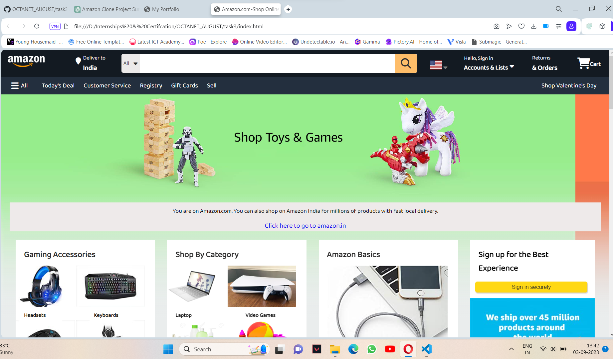
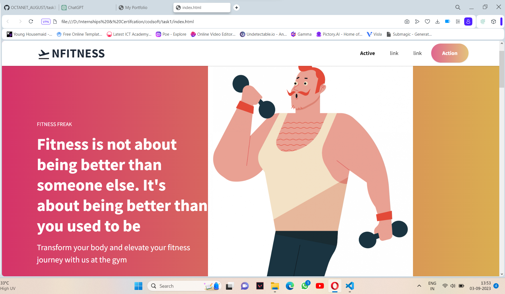
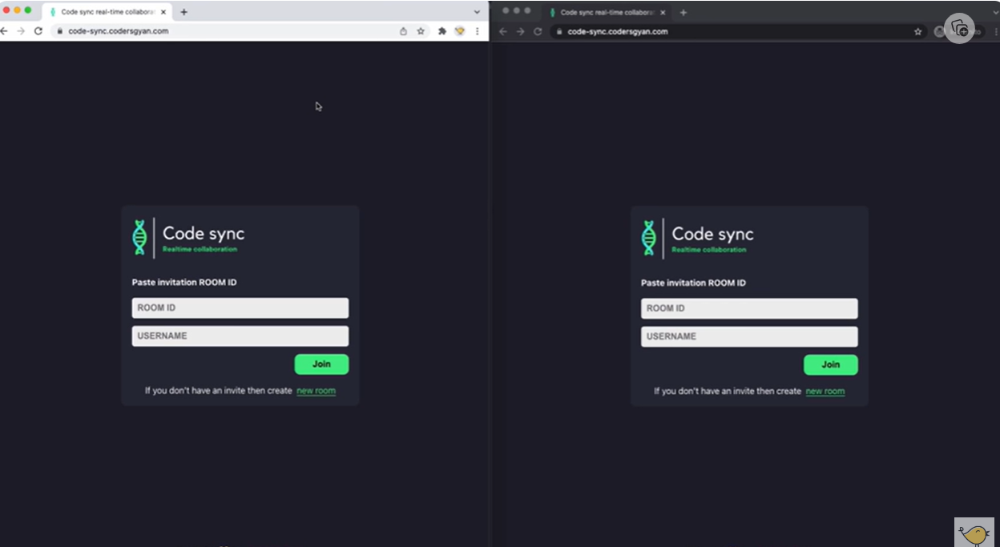

Contact Me
Email: nitinratela01@gmai.com
Phone: 8865977466
Web Developer & Designer
I'm Nitin pursuing Bachelor in Engineering with majors in computer science from Graphic Era Hill University .
I have done 3 projects uptill now in File Management , machine learning and web development. My hobbies are playing E-Games and sketching.
In an era where e-commerce has become an integral part of our lives, the Amazon Clone Project sets out to embark on a journey of innovation and entrepreneurship.
Imagine harnessing the power of technology to recreate the magic of one of the world's largest online marketplaces, Amazon.
Our vision for the Amazon Clone Project is to replicate the essence of Amazon's success - a seamless shopping experience, a vast product catalog, and customer-centric services.
A landing page is a crucial component of a digital marketing strategy designed to convert visitors into customers, subscribers, or leads. It serves as the first point of contact for users who click on an online ad, email link, or social media post. The primary goal of a landing page is to capture the visitor's attention, provide relevant information, and persuade them to take a specific action, such as making a purchase, signing up for a newsletter, downloading a resource, or requesting more information.
The purpose of this project is to design and develop a real-time code editor application using web socket technology to help users collaborate while working on the project. This application provides a feature where users can collaborate on a project in real-time. It is a web application that provides workspace to writing, perform, display the results of the code through the terminal, and collaborate with other users in real-time. The application main features are providing workspace to make, execute and build the source code, real-time collaboration, and build the terminal. This application supports C, C++, and Java programming languages.
Email: nitinratela01@gmai.com
Phone: 8865977466